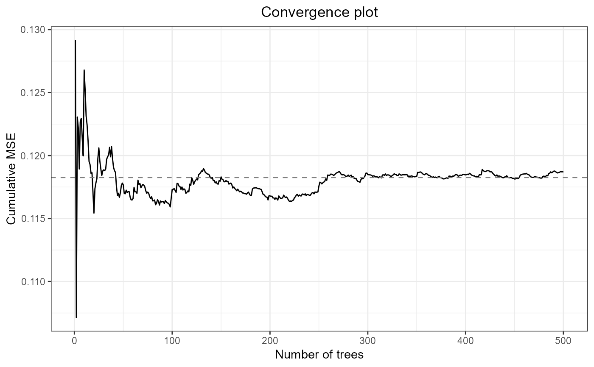
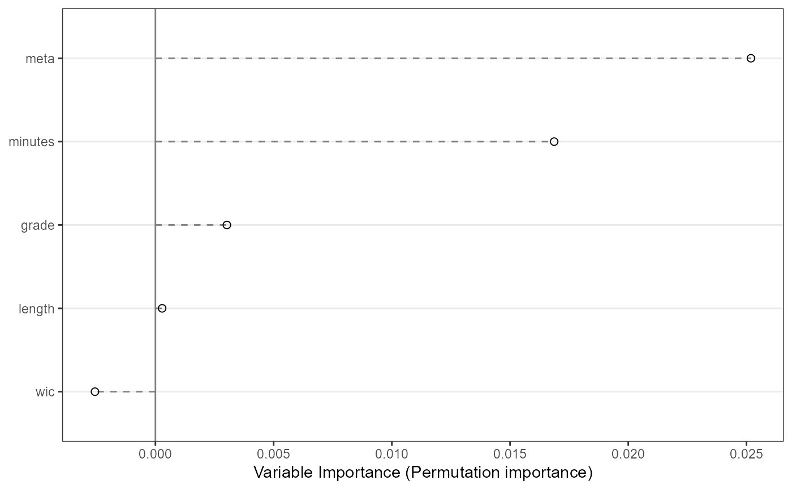

MetaForest.RdMetaForest uses a weighted random forest to explore heterogeneity in
meta-analytic data. MetaForest is a wrapper for ranger
(Wright & Ziegler, 2015). As input, MetaForest takes the study effect sizes
and their variances (these can be computed, for example, using the
metafor package), as well as the moderators
that are to be included in the model. By default, MetaForest uses
random-effects weights, and estimates the between-studies variance using a
restricted maximum-likelihood estimator. However, it may be beneficial to
first conduct an unweighted MetaForest, and then use the estimated residual
heterogeneity from this model as the estimate of tau2 for a
random-effects weighted MetaForest.
MetaForest(
formula,
data,
vi = "vi",
study = NULL,
whichweights = "random",
num.trees = 500,
mtry = NULL,
method = "REML",
tau2 = NULL,
...
)Formula. Specify a formula for the MetaForest model, for
example, yi ~ . to predict the outcome yi from all moderators
in the data. Only additive formulas are allowed (i.e., x1+x2+x3).
Interaction terms and non-linear terms are not required, as the random
forests algorithm inherently captures these associations.
A data.frame containing the effect size, moderators, and the variance of the effect size.
Character. Specify the name of the column in the data that
contains the variances of the effect sizes. This column will be removed from
the data prior to analysis. Defaults to "vi".
Character. Optionally, specify the name of the column in the
data that contains the study id. Use this when the data includes
multiple effect sizes per study. This column can be a vector of integers, or
a factor. This column will be removed from the data prior to analysis.
See Details for more information about analyzing dependent data.
Character. Indicate what time of weights are required.
A random-effects MetaForest is grown by specifying whichweights =
"random". A fixed-effects MetaForest is grown by specifying
whichweights = "fixed". An unweighted MetaForest is grown by
specifying whichweights = "unif". Defaults to "random".
Atomic integer. Specify the number of trees in the forest. Defaults to 500.
Atomic integer. Number of candidate moderators available for each split. Defaults to the square root of the number moderators (rounded down).
Character. Specify the method by which to estimate the residual
variance. Can be set to one of the following: "DL", "HE", "SJ", "ML", "REML",
"EB", "HS", or "GENQ". Default is "REML". See the
metafor package for more information about
these estimators.
Numeric. Specify a predetermined value for the residual heterogeneity. Entering a value here supersedes the estimated tau2 value. Defaults to NULL.
Additional arguments are passed directly to ranger. It is recommended not to use additional arguments.
List of length 3. The "forest" element of this list is an object of class "ranger", containing the results of the random forests analysis. The "rma_before" element is an object of class "rma.uni", containing the results of a random-effects meta-analysis on the raw data, without moderators. The "rma_after" element is an object of class "rma.uni", containing the results of a random-effects meta-analysis on the residual heterogeneity, or the difference between the effect sizes predicted by MetaForest and the observed effect sizes.
For dependent data, a clustered MetaForest analysis is more
appropriate. This is because the predictive performance of a MetaForest
analysis is evaluated on out-of-bootstrap cases, and when cases out of the
bootstrap sample originate from the same study, the model will be overly
confident in its ability to predict their value. When the MetaForest is
clustered by the study variable, the dataset is first split into two
cross-validation samples by study. All dependent effect sizes from each study
are thus included in the same cross-validation sample. Then, two random
forests are grown on these cross-validation samples, and for each random
forest, the other sample is used to calculate prediction error and variable
importance (see Janitza,
Celik, & Boulesteix, 2016).
#Example 1:
#Simulate data with a univariate linear model
set.seed(42)
data <- SimulateSMD()
#Conduct unweighted MetaForest analysis
mf.unif <- MetaForest(formula = yi ~ ., data = data$training,
whichweights = "unif", method = "DL")
#Print model
mf.unif
#> Call:
#> MetaForest(formula = yi ~ ., data = data$training, whichweights = "unif",
#> method = "DL")
#>
#> R squared (OOB): 0.2768
#> Residual heterogeneity (tau2): 0.0120
#Conduct random-effects weighted MetaForest analysis
mf.random <- MetaForest(formula = yi ~ ., data = data$training,
whichweights = "random", method = "DL",
tau2 = 0.0116)
#Print summary
summary(mf.random)
#> MetaForest results
#>
#> Type of analysis: MetaForest
#> Number of studies: 20
#> Number of moderators: 5
#> Number of trees in forest: 500
#> Candidate variables per split: 2
#> Minimum terminal node size: 5
#> OOB prediction error (MSE): 0.0925
#> R squared (OOB): 0.3576
#>
#> Tests for Heterogeneity:
#> tau2 tau2_SE I^2 H^2 Q-test df Q_p
#> Raw effect sizes: 0.0553 0.0486 37.2642 1.5940 30.2857 19 0.0483
#> Residuals (after MetaForest): 0.0000 0.0302 0.0000 1.0000 18.9321 19 0.4612
#>
#>
#> Random intercept meta-analyses:
#> Intercept se ci.lb ci.ub p
#> Raw effect sizes: -0.2136 0.0875 -0.3851 -0.0421 0.0147
#> Residuals (after MetaForest): 0.0327 0.0680 -0.1005 0.1660 0.6300
#Example 2: Real data from metafor
#Load and clean data
data <- dat.bangertdrowns2004
data[, c(4:12)] <- apply(data[ , c(4:12)], 2, function(x){
x[is.na(x)] <- median(x, na.rm = TRUE)
x})
data$subject <- factor(data$subject)
data$yi <- as.numeric(data$yi)
#Conduct MetaForest analysis
mf.bd2004 <- MetaForest(formula = yi~ grade + length + minutes + wic+
meta, data, whichweights = "unif")
#Print MetaForest object
mf.bd2004
#> Call:
#> MetaForest(formula = yi ~ grade + length + minutes + wic + meta,
#> data = data, whichweights = "unif")
#>
#> R squared (OOB): 0.0887
#> Residual heterogeneity (tau2): 0.0672
#Check convergence plot
plot(mf.bd2004)

#Check summary
summary(mf.bd2004, digits = 4)
#> MetaForest results
#>
#> Type of analysis: MetaForest
#> Number of studies: 48
#> Number of moderators: 5
#> Number of trees in forest: 500
#> Candidate variables per split: 2
#> Minimum terminal node size: 5
#> OOB prediction error (MSE): 0.1426
#> R squared (OOB): 0.0887
#>
#> Tests for Heterogeneity:
#> tau2 tau2_SE I^2 H^2 Q-test df Q_p
#> Raw effect sizes: 0.0499 0.0197 58.3740 2.4023 107.1061 47 0.0000
#> Residuals (after MetaForest): 0.0672 0.0238 65.3486 2.8859 129.8299 47 0.0000
#>
#>
#> Random intercept meta-analyses:
#> Intercept se ci.lb ci.ub p
#> Raw effect sizes: 0.2219 0.0460 0.1317 0.3122 0.0000
#> Residuals (after MetaForest): -0.0361 0.0502 -0.1345 0.0624 0.4726
#Examine variable importance plot
VarImpPlot(mf.bd2004)
